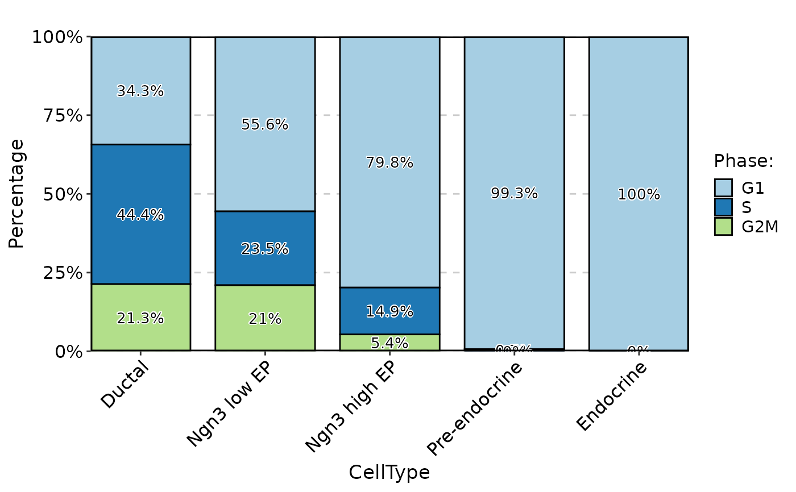
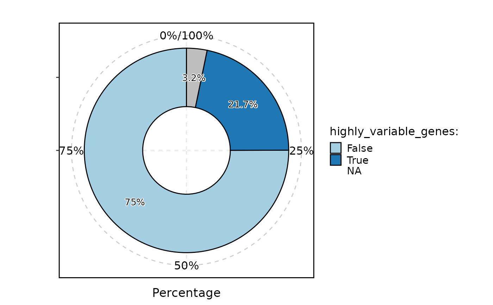
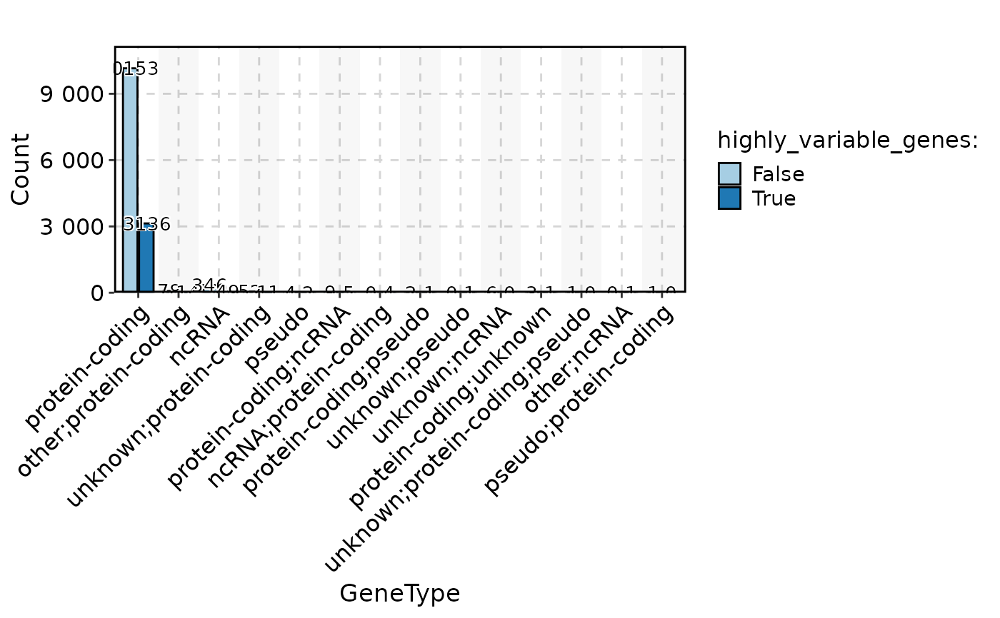

Visualizes data using various plot types such as bar plots, rose plots, ring plots, pie charts, trend plots, area plots, dot plots, sankey plots, chord plots, venn diagrams, and upset plots.
Usage
StatPlot(
meta.data,
stat.by,
group.by = NULL,
split.by = NULL,
bg.by = NULL,
flip = FALSE,
NA_color = "grey",
NA_stat = TRUE,
keep_empty = FALSE,
individual = FALSE,
stat_level = NULL,
plot_type = c("bar", "rose", "ring", "pie", "trend", "area", "dot", "sankey", "chord",
"venn", "upset"),
stat_type = c("percent", "count"),
position = c("stack", "dodge"),
palette = "Paired",
palcolor = NULL,
alpha = 1,
bg_palette = "Paired",
bg_palcolor = NULL,
bg_alpha = 0.2,
label = FALSE,
label.size = 3.5,
label.fg = "black",
label.bg = "white",
label.bg.r = 0.1,
aspect.ratio = NULL,
title = NULL,
subtitle = NULL,
xlab = NULL,
ylab = NULL,
legend.position = "right",
legend.direction = "vertical",
theme_use = "theme_scp",
theme_args = list(),
combine = TRUE,
nrow = NULL,
ncol = NULL,
byrow = TRUE,
force = FALSE,
seed = 11
)Arguments
- meta.data
The data frame containing the data to be plotted.
- stat.by
The column name(s) in
meta.dataspecifying the variable(s) to be plotted.- group.by
The column name in
meta.dataspecifying the grouping variable.- split.by
The column name in
meta.dataspecifying the splitting variable.- bg.by
The column name in
meta.dataspecifying the background variable for bar plots.- flip
Logical indicating whether to flip the plot.
- NA_color
The color to use for missing values.
- NA_stat
Logical indicating whether to include missing values in the plot.
- keep_empty
Logical indicating whether to keep empty groups in the plot.
- individual
Logical indicating whether to plot individual groups separately.
- stat_level
The level(s) of the variable(s) specified in
stat.byto include in the plot.- plot_type
The type of plot to create. Can be one of "bar", "rose", "ring", "pie", "trend", "area", "dot", "sankey", "chord", "venn", or "upset".
- stat_type
The type of statistic to compute for the plot. Can be one of "percent" or "count".
- position
The position adjustment for the plot. Can be one of "stack" or "dodge".
- palette
The name of the color palette to use for the plot.
- palcolor
The color to use in the color palette.
- alpha
The transparency level for the plot.
- bg_palette
The name of the background color palette to use for bar plots.
- bg_palcolor
The color to use in the background color palette.
- bg_alpha
The transparency level for the background color in bar plots.
- label
Logical indicating whether to add labels on the plot.
- label.size
The size of the labels.
- label.fg
The foreground color of the labels.
- label.bg
The background color of the labels.
- label.bg.r
The radius of the rounded corners of the label background.
- aspect.ratio
The aspect ratio of the plot.
- title
The main title of the plot.
- subtitle
The subtitle of the plot.
- xlab
The x-axis label of the plot.
- ylab
The y-axis label of the plot.
- legend.position
The position of the legend in the plot. Can be one of "right", "left", "bottom", "top", or "none".
- legend.direction
The direction of the legend in the plot. Can be one of "vertical" or "horizontal".
- theme_use
The name of the theme to use for the plot. Can be one of the predefined themes or a custom theme.
- theme_args
A list of arguments to be passed to the theme function.
- combine
Logical indicating whether to combine multiple plots into a single plot.
- nrow
The number of rows in the combined plot.
- ncol
The number of columns in the combined plot.
- byrow
Logical indicating whether to fill the plot by row or by column.
- force
Logical indicating whether to force the plot even if some variables have more than 100 levels.
- seed
The random seed to use for reproducible results.
Examples
data("pancreas_sub")
head(pancreas_sub@meta.data)
#> orig.ident nCount_RNA nFeature_RNA S_score G2M_score nCount_spliced nFeature_spliced
#> CAGCCGAAGCGATATA SeuratProject 10653 3295 0.33188155 0.54532743 10653 3295
#> AGTGTCATCGCCGTGA SeuratProject 4596 2053 -0.07156909 -0.08865353 4596 2053
#> GATGAAAAGTTGTAGA SeuratProject 14091 3864 0.08940628 0.77610326 14091 3864
#> CACAGTACATCCGTGG SeuratProject 5484 2510 -0.25927997 -0.25941831 5484 2510
#> CGGAGCTCATTGGGCC SeuratProject 7357 2674 -0.11764368 0.46237856 7357 2674
#> AGAGCTTGTGTGACCC SeuratProject 6498 2516 -0.11406432 -0.17830831 6498 2516
#> nCount_unspliced nFeature_unspliced CellType SubCellType Phase
#> CAGCCGAAGCGATATA 1587 1063 Ductal Ductal G2M
#> AGTGTCATCGCCGTGA 1199 803 Pre-endocrine Pre-endocrine G1
#> GATGAAAAGTTGTAGA 2166 1379 Ngn3 low EP Ngn3 low EP G2M
#> CACAGTACATCCGTGG 1339 859 Endocrine Beta G1
#> CGGAGCTCATTGGGCC 976 745 Ductal Ductal G2M
#> AGAGCTTGTGTGACCC 822 591 Ductal Ductal G1
StatPlot(pancreas_sub@meta.data, stat.by = "Phase", group.by = "CellType", plot_type = "bar", label = TRUE)

head(pancreas_sub[["RNA"]]@meta.features)
#> highly_variable_genes
#> Mrpl15 False
#> Npbwr1 <NA>
#> 4732440D04Rik False
#> Gm26901 False
#> Sntg1 True
#> Mybl1 False
StatPlot(pancreas_sub[["RNA"]]@meta.features, stat.by = "highly_variable_genes", plot_type = "ring", label = TRUE)
#> Warning: Removed 1 row containing missing values or values outside the scale range (`geom_col()`).
#> Warning: Removed 1 row containing missing values or values outside the scale range (`geom_text_repel()`).

pancreas_sub <- AnnotateFeatures(pancreas_sub, species = "Mus_musculus", IDtype = "symbol", db = "GeneType")
#> Species: Mus_musculus
#> Loading cached db: GeneType version:3.21.0 nterm:11 created:2025-09-08 14:31:42.441959
#> Convert ID types for the database: GeneType
#> Connect to the Ensembl archives...
#> Using the 103 version of biomart...
#> Connecting to the biomart...
#> Searching the dataset mmusculus ...
#> Connecting to the dataset mmusculus_gene_ensembl ...
#> Converting the geneIDs...
#> 27645 genes mapped with entrez_id
#> ==============================
#> 27645 genes mapped
#> 84660 genes unmapped
#> ==============================
head(pancreas_sub[["RNA"]]@meta.features)
#> highly_variable_genes GeneType
#> Mrpl15 False protein-coding
#> Npbwr1 <NA> protein-coding
#> 4732440D04Rik False <NA>
#> Gm26901 False <NA>
#> Sntg1 True protein-coding
#> Mybl1 False protein-coding
StatPlot(pancreas_sub[["RNA"]]@meta.features,
stat.by = "highly_variable_genes", group.by = "GeneType",
stat_type = "count", plot_type = "bar", position = "dodge", label = TRUE, NA_stat = FALSE
)
